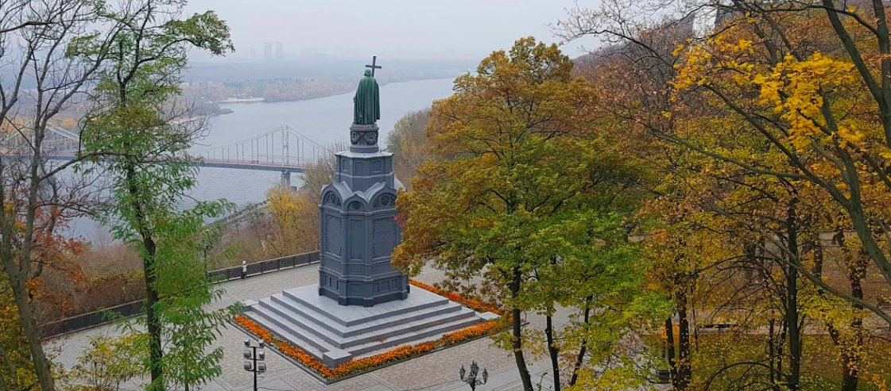
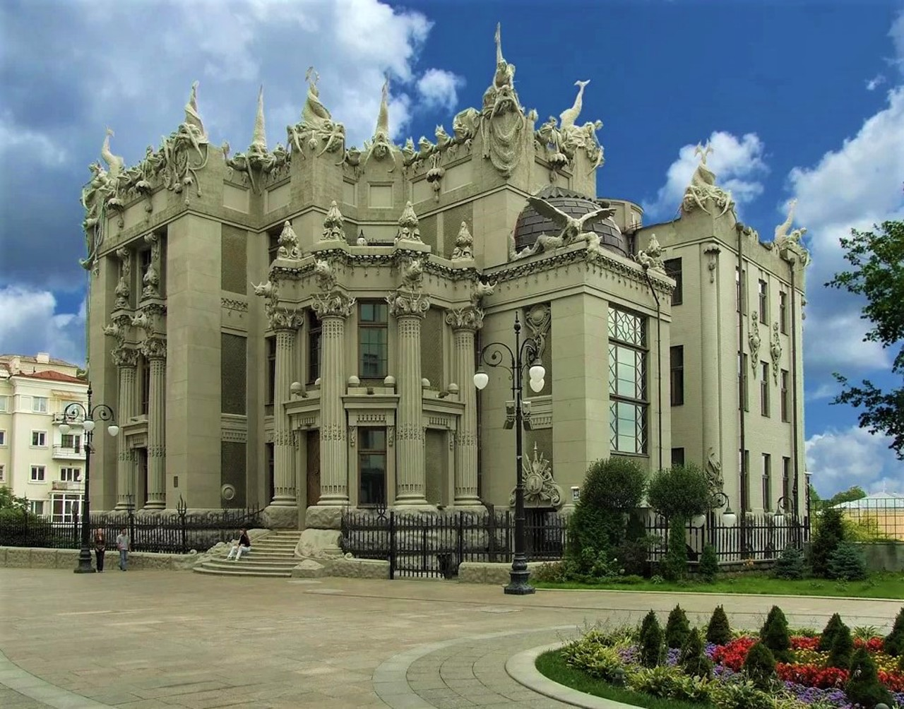
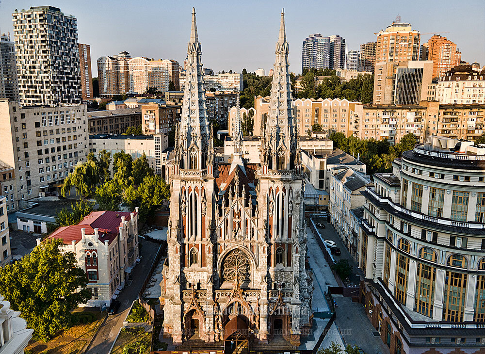
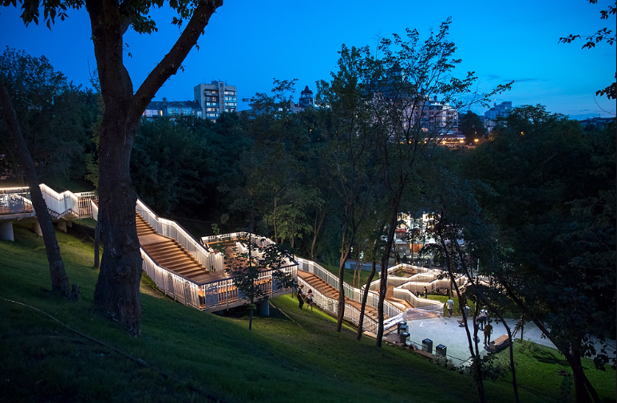
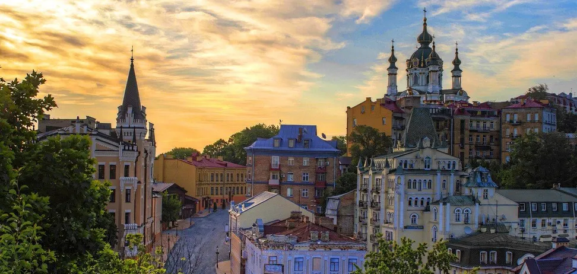

Цікаві місця Києва, які варто відвідати
Київ - це неймовірно колоритне місто з безліччю цікавих, красивих та мальовничих місць. Деякі з них на увазі і чудово відомі всім мешканцям столиці та багатьом приїжджим, інші ж знаходяться в затишних куточках далеко від звичних маршрутів більшості туристів та киян. Але всі вони безперечно варті того, щоб бути побаченими! Спеціально для вас ми склали ТОП 5 найкрасивіших місць у Києві, де можна погуляти, насолодитися чудовими краєвидами та зробити вражаючі фотографії.
ТОП 5 найкрасивіших місць Києва
Парк Володимирівська Гірка
Неймовірно гарне місце Києва. Звідси відкриваються захоплюючі краєвиди на столицю і на Дніпро, а крім того тут є безліч затишних стежок, якими так приємно погуляти в теплу пору року і помилуватися природою.
Будинок із химерами
Неповторне та незвичайне місце Києва. Складна архітектурна композиція з безліччю неймовірних скульптур яскраво виділяють будинок на тлі інших будівель. Хімери, морські чудовиська, гігантські жаби, носороги, крокодили – на фасаді можна побачити будь-кого. Прогулюючись тут, однозначно, варто зробити фото на тлі одного із найкрасивіших місць Києва. Будівлю було збудовано відомим київським архітектором Владиславом Городецьким на честь власного сорокаліття і досі приковує увагу туристів та городян.
Миколаївський костел
Як і Будинок з химерами, будівля Національного художнього музею та караїмська кенаса, Миколаївський костел належить до витворів архітектора Владислава Городецького, який сміливо експериментував з історичними стилями. Для костелу він обрав готичний — і як нам здається, не прогадав. Костел діє як храм і водночас слугує Залом органної та камерної музики
Пейзажна алея
Серед місцевих жителів це напрочуд мальовниче місце Києва отримало ласкаве прізвисько «Пейзажка». Алея була заснована ще у 1980-х роках, проте популярність і популярність у відпочиваючих завоювала лише після 2009 року, коли скульптор Костянтин Скритуцький спорудив на цій красивій вулиці Києва безліч яскравих та незвичайних скульптур. Коти-сороконіжки, лавочка-кролик - це лише мала частина тих дивовижних образів, які тут можна побачити. Навіть є втілення відомих дитячих казок - "Аліса в країні чудес" та "Маленький принц". І якщо ви хочете побачити посмішку Чеширського Кота та інші найкрасивіші місця у Києві – то вам у Пейзажку!
Андріївський узвіз
Сьогодні Андріївський узвіз - це вулиця-музей, де старовинна архітектура межує поряд з картинною галереєю під відкритим небом, де багато музеїв і пам'ятників, де історія переплітається з сучасністю.На Андріївському узвозі жили і працювали багато знаменитих діячів науки і культури: вчені, письменники, композитори, художники, скульптори. Тут відкриті художні галереї, виставки, театри і художні майстерні.На цій вулиці знаходиться «Музей однієї вулиці», Музей письменника Михайла Булгакова та меморіальний «будинок-музей Кавалерідзе». Тут же розташований всім відомий будинок-пам'ятник архітектури XIX століття, спорудженого в стилі британської готики, який носить назву «Замок Річарда - Левине серце».